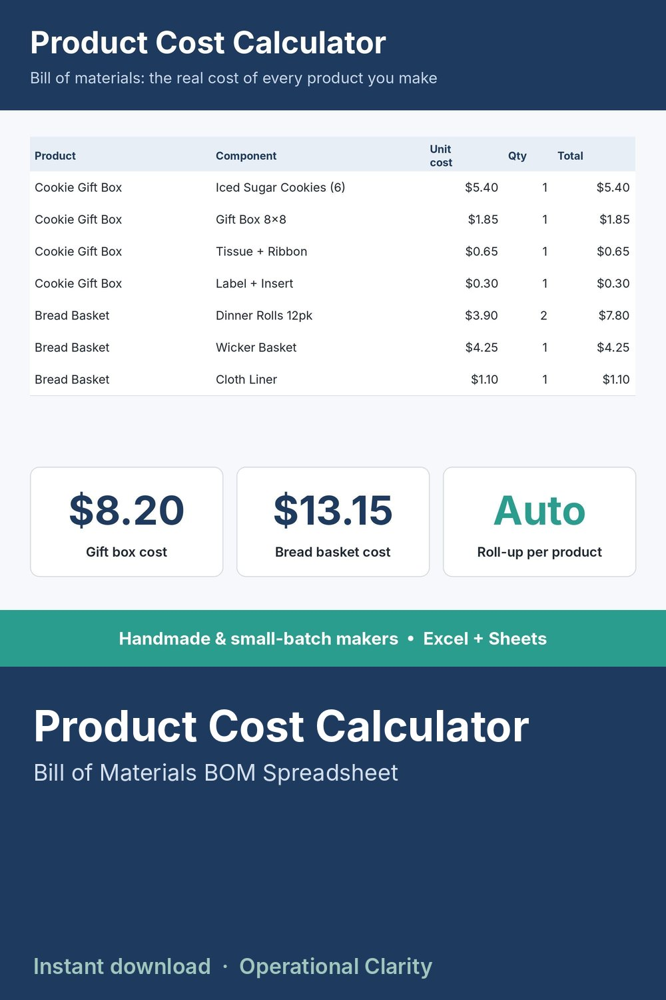

Product Cost Calculator

Bill of materials (BOM) spreadsheet and cost of goods sold calculator: list every component, get the true unit cost of your finished product, and a suggested price from your target margin.
STOP PRICING A BUNDLED PRODUCT WITHOUT KNOWING WHAT IT ACTUALLY COSTS TO MAKE.
If you assemble a finished product from purchased parts - a gift basket, a bakery box, a kit - the real cost is every component added together, not just the one you remember. This sheet rolls it all up automatically.
WHAT IT DOES
- Log every purchased component that goes into a finished good: vendor, unit cost, quantity per unit
- Automatically rolls every component's cost up into one true per-unit cost for the finished good
- Suggests a sell price based on your own target margin, so pricing isn't a guess
WHAT'S INCLUDED
- Excel file (.xlsx) - works in Excel 2010 and newer, no macros, no add-ins needed
- Start Here tab with plain-English setup instructions
- Sample data included so you can see it working before you enter your own numbers
WHO THIS IS FOR
Bakery, gift, and kit-assembly business owners who bundle purchased components into a finished product and want to know their real cost before they set a price.
INSTANT DOWNLOAD - no physical item will be shipped. Because this is a digital product, all sales are final.